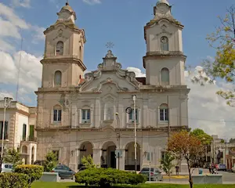

Francisco Gandiola
About Me
My name is Francisco Gandiola, I was born and raised in Buenos Aires, Argentina. I've finished my missionary service on September 2025. After that, I joined the Church's workforce as an in-field mentor. I live with my younger sisters, and I wouldn't be lying if I said I act like an elder brother for my group of friends too, even though I'm not the oldest guy.
Pilar: where my mortal journey began

Pilar City is part of the Greater Buenos Aires urban conurbation and is the seat of the administrative division of Pilar Partido. It is located about 51 km northwest of downtown Buenos Aires. It was the site of the signing of the Treaty of Pilar in 1820, a foundational document that is one of "pre-existing pacts" of the Constitution of Argentina and laid the foundation for Argentina's federal system of government.